Being a founder isn't easy. Hundreds of things land on your plate every day, and getting all that context to your team is a job of its own.
Allevia is our answer, and our entry for Graph Hacks: Context for AI Agents, FalkorDB's hackathon. We built it in four days, 15 to 18 October 2026, in more than 800 commits. Here is how it works, what we measured, and what broke.
The problem: context lives in one head
Every "why" in a small business comes back to the founder, because the context lives nowhere else.
Why a price changed. What was promised to which client. Which post brought the enquiries. The founder knows. The team mostly doesn't, and the tools never do.
The inbox doesn't know about the analytics. The ad account doesn't know the checkout is broken, so it keeps spending.
Most AI tools don't fix this. They start each chat from nothing, or from a pile of pasted documents.
What we built
A company brain per business, and a team of 13 AI agents that must read it before they act.
Each business gets one FalkorDB graph. It is built from the website, the founder's connected tools, uploaded documents and conversations. Every fact keeps its source and its date.
The team works in nine departments: The Chief, Data Detective, Growth Hacker, Miss Influencer, Techie, Firefighter, Bug Hunter, Memory Keeper, Wordsmith, Fact Checker, Number Cruncher, Deal Closer and Taskmaster. The Chief takes each request and decides who does what. Each agent's instructions say what to read in the brain first, before any outside tool.
Nothing goes out without the founder's OK. A post, an email, a fix or an ad change arrives as a card, on the web or in Discord.
The live demo has three businesses:
- Aamdani, our own startup, with Gmail, Analytics, Search Console and Instagram connected for real.
- AVS Atelier, an architecture and interiors studio, built from its website and Instagram.
- Blue Tokai Coffee, a known brand. Its public data is real. Its private side (orders, payments, ad spend) is sample numbers, labelled as samples on every screen.
Why a graph, not just vectors
The honest answer to "why" is a path, and paths live in a graph.
Listen to what founders ask. "Why did online orders drop this week?" "What breaks if the Instagram token expires?" "Why did we stop posting daily stories?"
None of these is a lookup. Each answer is a chain: from a number, to the step that fell, to the release that changed it, to the person who owns the fix.
Vector search finds text that sounds like the question. That is a good place to start. But it can't tell you that a payment error began the day of a release, or that the release changed the payment page. Those are links.
So we use both. Search finds where to start. The graph explains.
Architecture at a glance
One server for the team, one FalkorDB for the brains, and the founder's tools at the edge.
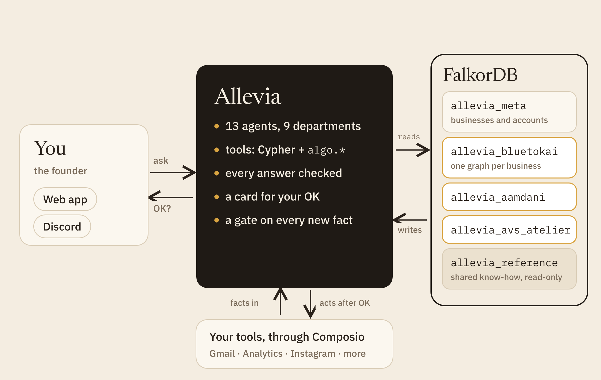
The founder talks to Allevia on the web or in Discord. The server runs the 13 agents (on the Claude Agent SDK), their graph tools, the answer checks and the approval cards.
Every read an agent makes goes to FalkorDB as GRAPH.RO_QUERY, so the database itself refuses a write. Writes go through our own upsert code and a gate.
The founder's tools connect through Composio. Facts flow in from them, and actions go out through them only after an OK.
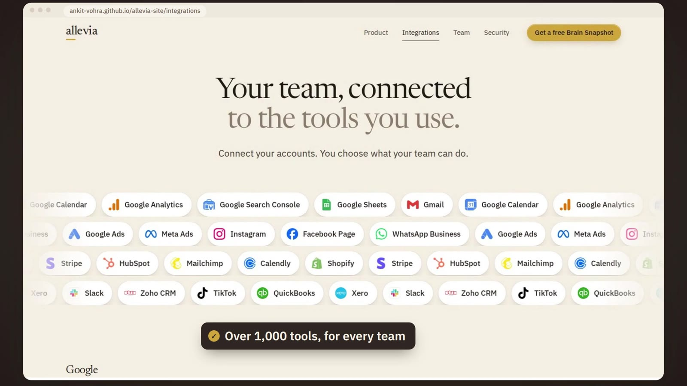
One graph per business
Isolation is the graph boundary, not a WHERE clause.
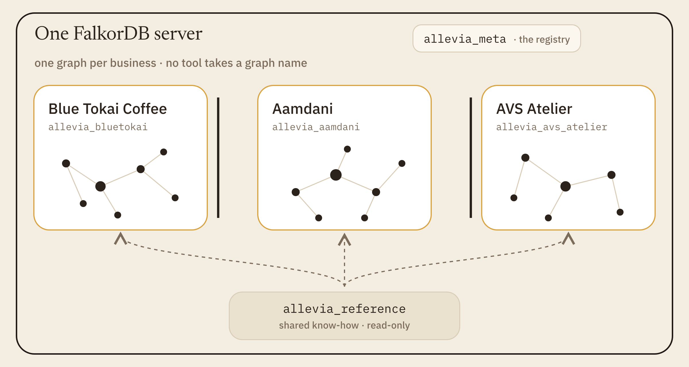
Each business is its own graph, named allevia_<slug>. No query in the product filters by tenant, and no agent tool accepts a graph name. A request is bound to one graph before any tool runs.
Two more graphs sit beside them. allevia_meta is the registry: one Tenant node per business, plus accounts, sessions and invites. allevia_reference holds general know-how, such as playbook rules, once for everyone, read-only.
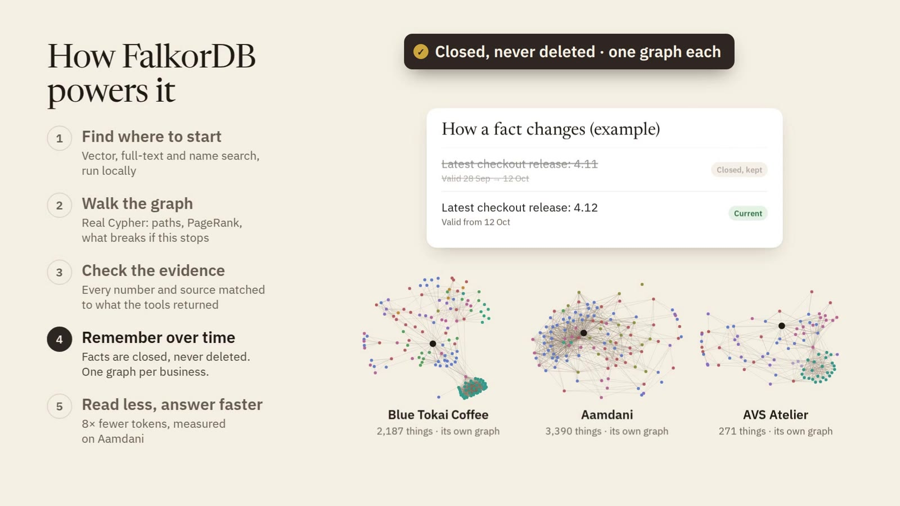
When we recorded the demo, Blue Tokai's graph held 2,187 things, Aamdani's 3,390 and AVS Atelier's 271. Each one can be exported, measured (GRAPH.MEMORY USAGE) or erased on its own.
Schema in numbers
A small, strict schema: every node has a type, every edge has two clocks and a source.
| What | Count | Where |
|---|---|---|
| Node types | 46 | ENTITY_TYPES in src/graph/schema.ts |
| Relationship types | 68 | REL_TYPES |
| Allowed (from, type, to) patterns | 386 | ALLOWED_PATTERNS; anything else is refused |
| One-holder relationships | 7 | FUNCTIONAL_RELS |
| Bookkeeping properties on every edge | 11 | EDGE_META_PROPS |
| Indexes per business graph | 12 | INDEXES in src/graph/indexes.ts |
Every node carries two labels: Entity and its type, such as Task. The id index sits on Entity.id, with UNIQUE and MANDATORY constraints. That one index serves every lookup by id, whatever the type.
A third label, Searchable, goes on 43 of the 46 types. It leaves out number readings (Observation), old versions and text chunks. The full-text and vector indexes sit on Searchable, so search only holds what search may return. We learned this the hard way: readings each had a display name, a business adds about 160,000 a year, and they crowded real things out of the ranking.
How a turn runs
Plan, work in parallel, review, revise once, answer, then check every claim.
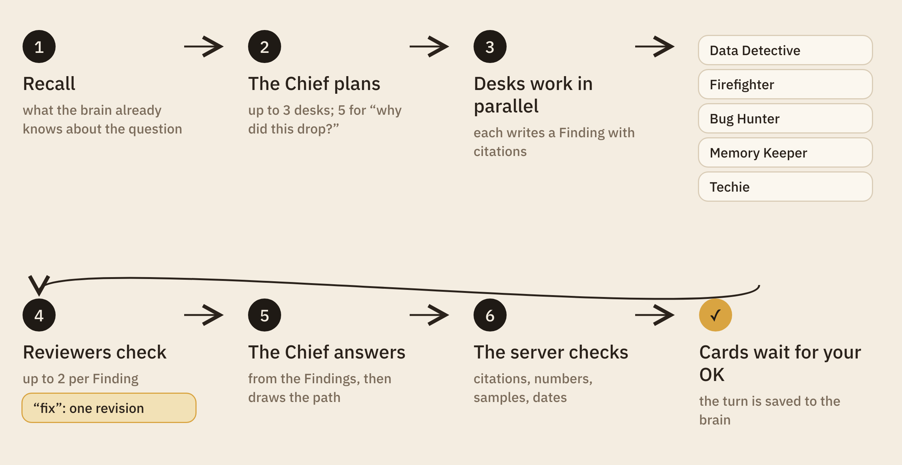
- Recall. The server reads what the brain already knows: earlier turns on the same things, notes, open cards.
- Plan. The Chief picks up to three desks for an ordinary question, and up to five for a "why did this drop?" or a review of the whole business.
- Work. Desks run in parallel, each with only its own tools. Each writes a
Findingnode with citations. That node is the handoff. - Review. Each Finding gets at most two reviewers. Number Cruncher checks figures, Fact Checker checks claims, Wordsmith checks voice, Bug Hunter checks Techie. A "fix" earns exactly one revision.
- Answer. The Chief writes the answer from the Findings, then calls
show_pathwith the nodes that explain it. - Check. The server checks citations and numbers against what the tools returned in this turn.
Then the cards wait, and the turn is saved to the brain: the Turn, every Finding, every node it touched and cited.
Every team, one brain
Connecting the tools is not about more dashboards. It is so what one team learns reaches the others.
Allevia connects through Composio, whose catalogue has over 1,600 tools: mail, calendars, analytics, ads, shops, CRMs. Whatever comes in lands in the same graph, so the ads team, the content team and the website team read the same facts.
On Blue Tokai we asked one question: "What did our ads and posts teach us this month, and what should content, ads and the website team each do next?" Seven teammates answered together in 102 seconds.
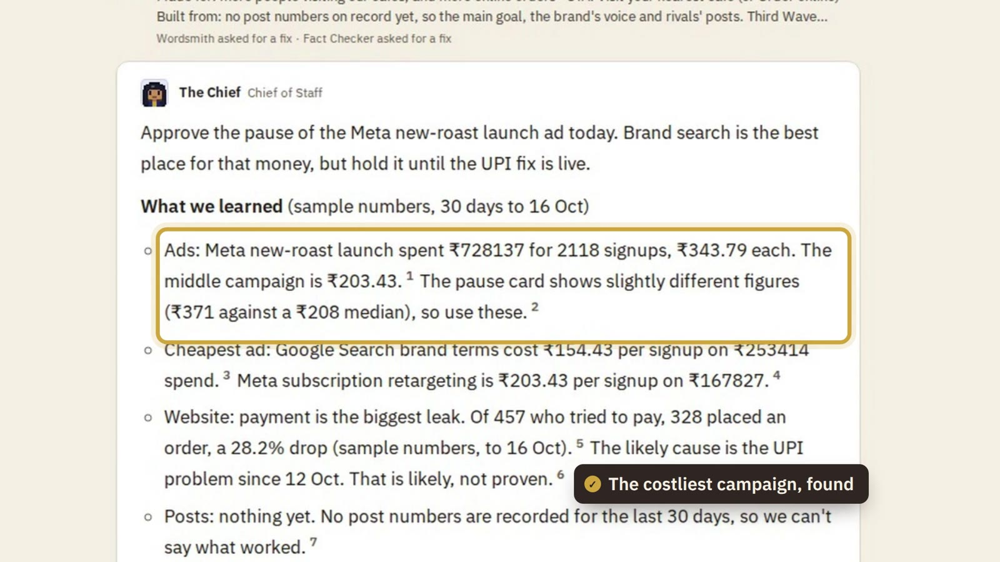
- Ads found the costliest campaign, the new-roast launch, at about 1.7 times the middle campaign's cost per sign-up. It was sending people to a checkout that was failing UPI payments. Growth Hacker proposed a pause, and moving the money to brand search.
- Content drafted test posts, each ending with the business's main goal: "Visit your nearest café". Fact Checker caught one caption that implied a free tasting.
- Website got the payment fix, and a Contact page fix ranked by how much it costs café visits.
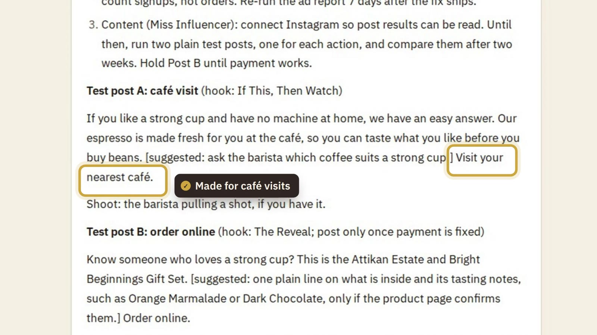
All three wait for the founder's OK. The numbers here are Blue Tokai's sample numbers, and the answer says so.
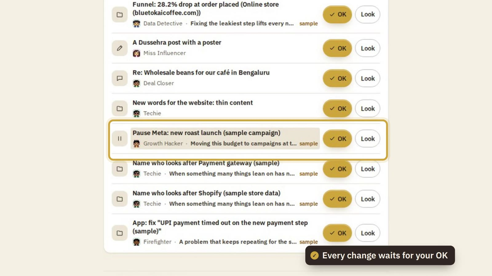
How retrieval works
Search finds where to start, Cypher walks the links, the server checks the claims, and the path is drawn.
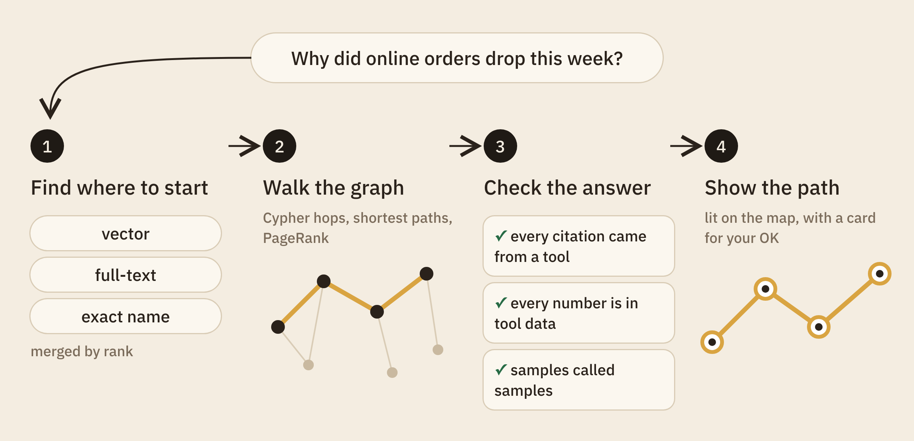
1. Find where to start
There are three entry points: vector search (by meaning), full-text search (by words), and an exact name. Embeddings, the numbers behind vector search, are 384 numbers per text, from a multilingual model that runs on our own server. No API call, no cost per search.
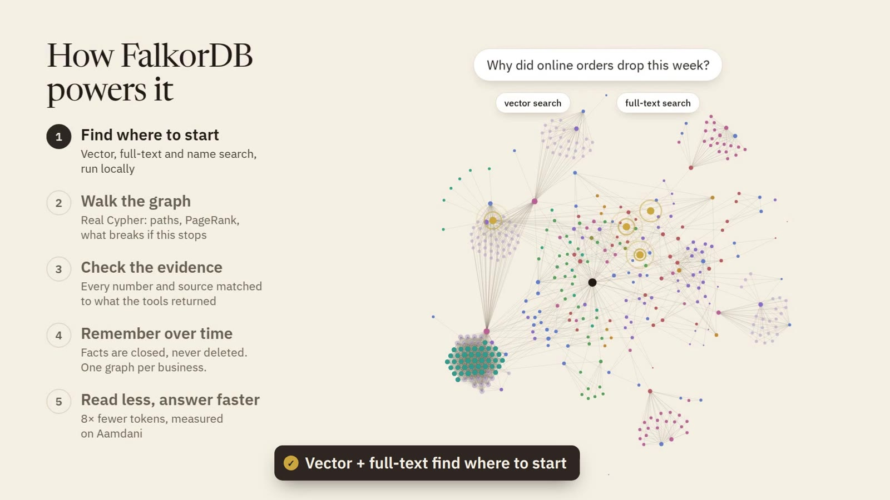
Here are two of the four searches the search tool sends at once, from src/agent/tools/search.ts:
CALL db.idx.fulltext.queryNodes('Searchable', $q) YIELD node, score
WITH node, score WHERE any(l IN labels(node) WHERE l IN $types) AND NOT node:Chunk …
RETURN … ORDER BY score DESC, node.id LIMIT $k
CALL db.idx.vector.queryNodes('Chunk', 'textEmbedding', $k, vecf32($v)) YIELD node, score
OPTIONAL MATCH (d:Document)-[:HAS_CHUNK]->(node)
RETURN … ORDER BY score ASC, node.idA matching chunk answers as its source document, so citations point at sources. The node.id at the end of each ORDER BY is load-bearing; the war stories say why.
The result lists are merged by reciprocal rank: each hit scores one over (60 plus its rank) in every list it appears in. It needs no tuning, and it doesn't care that vector and full-text scores live on different scales.
const RRF_K = 60;
// …
const add = (key: string, node: NodeRow, rank: number, via: string, extra: Partial<Hit> = {}) => {
const h = hits.get(key) ?? { node, score: 0, via: new Set<string>(), snippetRank: Infinity };
h.score += 1 / (RRF_K + rank);
h.via.add(via);
// …
};
fuseEntities(ftE, "text");
fuseChunks(ftC, "chunk-text");
fuseEntities(vE, "vector");
fuseChunks(vC, "chunk-vector");An unknown name comes back as "I don't have that in your records", never as an empty walk that reads like "nothing depends on it".
2. Walk the graph
The agents have 21 graph tools, and every one is a Cypher query or a graph algorithm. "What breaks if this stops" is one query per hop over DEPENDS_ON, AFFECTS and BLOCKS, so the app can show one step away next to four steps away.
The links behind an answer come from FalkorDB's shortest-path procedure, from src/graph/algorithms.ts:
MATCH (a:Entity {id:$from}), (b:Entity {id:$to})
CALL algo.SPpaths({sourceNode: a, targetNode: b, relDirection: 'both', maxLen: $maxLen, pathCount: $pathCount,
relTypes: $rels, costProp: 'closedCost', maxCost: $maxCost})
YIELD path RETURN path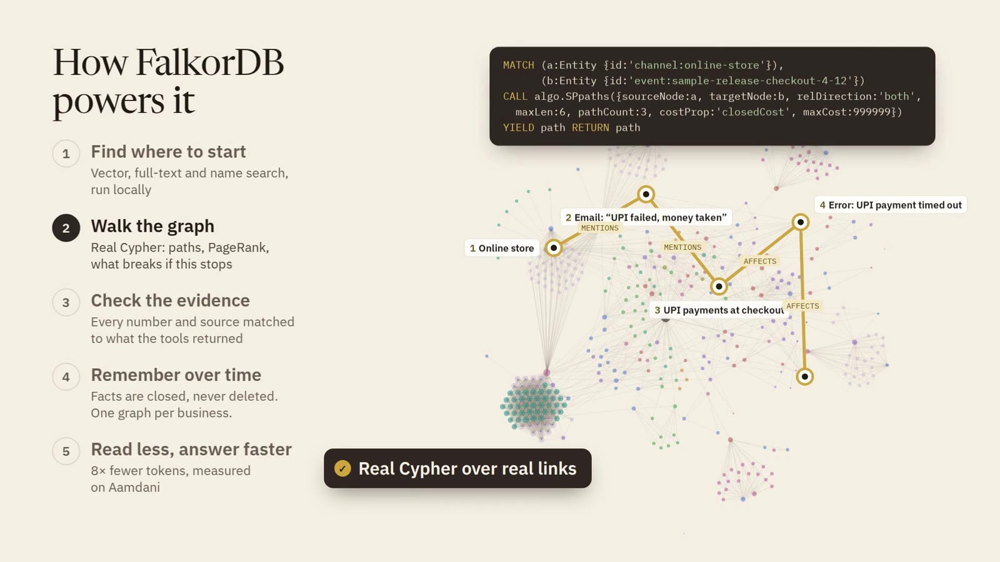
PageRank, a score for how much of the business leads to a thing, ranks what matters. It runs on a cached copy of the graph that holds current edges only (explained in the memory section). FalkorDB caps a result at 10,000 rows, so the scores come back packed into lists of 5,000:
CALL algo.pageRank('Searchable', null) YIELD node, score
WITH node.id AS id, score AS v WHERE id IS NOT NULL
WITH collect([id, v]) AS xs UNWIND range(0, size(xs) - 1, $page) AS i RETURN xs[i..i + $page] AS partAgents can also write their own Cypher, through one tool with five guards, from src/agent/tools/cypher.ts:
const READ_PROCS = new Set([
"db.labels", "db.relationshiptypes", "db.propertykeys", "db.indexes", "db.constraints", "db.meta.stats",
"db.idx.fulltext.querynodes", "db.idx.fulltext.queryrelationships", "db.idx.vector.querynodes", // …
]);
// …
const reason = writeReason(base, args.params); // no write keyword, only READ_PROCS, no reduce()
if (reason) throw new InputError(reason, { refused: true });
const bounded = boundRows(groupInWith(base), args.params, CYPHER_ROW_CAP + 1);
raw = await ro(ctx, bounded.query, bounded.params, CYPHER_TIMEOUT_MS); // GRAPH.RO_QUERY, 5 sThe text check comes first. GRAPH.RO_QUERY is the guard that can't be talked around.
3. Check the answer
Before the founder sees an answer, the server checks it. Every [[node-id]] the answer cites must have been returned by a tool in this turn. Every number must appear in the tools' data, allowing for rounding, percentages, "55k" and "₹1.2 lakh". An answer that used sample data must say so, and one built on data over a week old must say "as of" a date.
A failed check never hides the answer. It shows as "unverified", and the result is stored on the turn.
4. Show the path
The Chief names the nodes behind the answer, in order. For each pair, the server looks for a direct edge, then a shortest path of up to four hops, and only through the business's own records, not through Allevia's own cards. The app lights that path on the map.
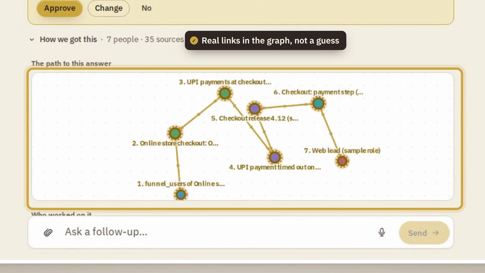
On Blue Tokai, "Why did online orders drop this week?" walks from the online store to the UPI payment step, the payment error, and the checkout release that brought it. Those numbers are samples, and the answer says so.
Memory with two clocks
Nothing is deleted. A fact that stops being true is closed with a date and kept.
A business changes its mind all the time. A task changes hands. A decision replaces an older one. If memory overwrites, the agents end up confidently wrong.
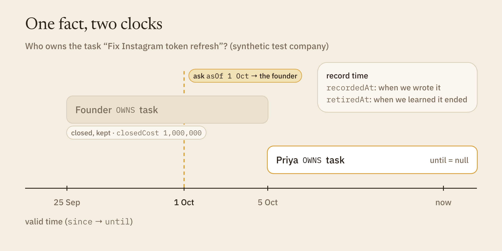
So every edge carries two clocks. Valid time (since, until) says when a fact was true. Record time (recordedAt, retiredAt) says when we learned it, and when we learned it had stopped. Every edge also carries its source (src) and its date (asOf).
Every tool takes an asOf date, so "who owned this task on 1 October?" has a real answer. In our synthetic test company, the task "Fix Instagram token refresh" is owned by Priya now; ask as of 1 October and the answer is the founder.
Closing an edge is one SET, from src/graph/edges.ts:
const CLOSE_SET = (v: string, reason: string) =>
`SET ${v}.until = CASE WHEN ${v}.since > $end THEN ${v}.since ELSE $end END, ${v}.retiredAt = coalesce(${v}.retiredAt, $now), ` +
`${v}.retiredAsOfMs = coalesce(${v}.retiredAsOfMs, $endedAsOf), ${v}.closedCost = $cost, ${v}.closeReason = ${reason}`;Some facts can only have one holder at a time. A task has one current owner. A decision is replaced by at most one successor. Seven such rules live in the schema:
export const FUNCTIONAL_RELS: FunctionalRule[] = [
{ rel: "OWNS", toType: "Task", key: "to", why: "a task has one current owner" },
{ rel: "SUPERSEDES", key: "to", why: "a decision (or rule, doc…) is superseded by at most one successor" },
// …
{ rel: "DERIVED_FROM", fromType: "Asset", key: "from", why: "an asset has one parent: the one it was made from" },
];The edge write is a single Cypher statement of about 50 lines. It reads the current and closed edges, finds a replay, and closes the old holder of a one-holder slot in the same statement as it opens the new one. Facts can arrive in any order; an older source never overrules a newer one. Re-running an ingest adds nothing.
When a task, a decision or a goal changes, its old state is saved as a Version node one hop away. Readings are never overwritten either: each is its own Observation node, with a time window, a date and a source.
One FalkorDB detail shaped all of this. The algo.* procedures take labels and relationship types, but they can't filter on edge properties, so they would walk a closed edge. Our fix has two halves:
- A closed edge carries
closedCost = 1,000,000, and the shortest-path call setsmaxCostjust under it. Closed edges are pruned inside the search. - PageRank and topic grouping run on a slim copy of the graph with current edges only. Building it ourselves took about 110 ms at 20,000 nodes, against 5.3 seconds for
GRAPH.COPY, which also rebuilds every search index. The copy is cached until a write lands.
Meetings are memory too. Paste the notes, say "remember this meeting", and Memory Keeper files the decisions, tasks and people, linked to what is already there, with the notes as the source.
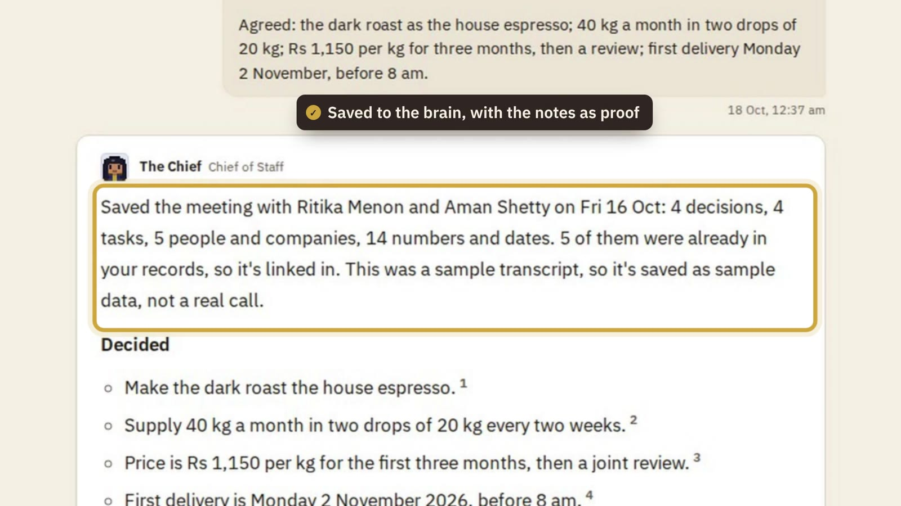
Keeping the brain clean as it grows
A brain that only grows gets slow, costly and noisy. So we measured ours, then put a gate on the door.
On 15 October, Aamdani's first load was 3,799 nodes and 11,897 edges. The next day, use alone added 283 nodes and 4,911 edges: conversations, findings, approvals, and the links from each answer to what it read. By then, 235 facts that had stopped being true were closed with a date, not deleted.
Storage, measured on 17 October:
| Business | Things | Links | Memory, all in |
|---|---|---|---|
| AVS Atelier (website and Instagram) | 544 | 2,222 | about 5 MB |
| A café from its website only (test) | 612 | 2,497 | about 6 MB |
| Shiftly (our synthetic demo) | 758 | 3,103 | about 7 MB |
| Aamdani (website, documents, code, two days of use) | 4,084 | 16,831 | about 40 MB |
That is about 10 KB per thing, with links, vectors, indexes and the server's own overhead shared out.
We also found waste. General know-how, such as about 200 playbook rules, had been copied into every business graph. So on 18 October we built four fixes:
- A shared reference graph,
allevia_reference, read-only and loaded once. A business keeps a small stub of a shared rule only when one of its own facts points at it, so citations still resolve. - A write gate. Every new node needs a known type, a source and a date, or it is refused and logged.
- Entity resolution on write. A new person, business or product that matches an existing one by name or email is linked to it, not created again. A first name alone is not enough.
- A hygiene report. It lists closed facts, old readings and cold, rarely linked things. It changes nothing; a person decides.
The gate's core, from src/graph/gate.ts:
export function gateNode(n: NodeInput, o: Pick<GateOpts, "src" | "asOf">): NodeInput {
if (!isEntityType(n.type)) throw new RefusedWrite(`unknown label ${JSON.stringify(n.type)}: not in the schema`);
const src = n.src ?? o.src;
const asOf = n.asOf ?? o.asOf;
if (!src) throw new RefusedWrite("no source (src): every new node says where it came from");
if (!asOf) throw new RefusedWrite("no date (asOf): every new node says as of when");
return n.src === src && n.asOf === asOf ? n : { ...n, src, asOf };
}Rolling old readings up into weeks, archiving old closed facts, and summarising clusters are planned, not built.
How fast it is
Walks take milliseconds, even on a graph many times our biggest business.
We timed the tools on 15 October, on a laptop, on FalkorDB 6.0.2. One graph is our small synthetic company. The other was built for timing: 37,240 nodes and 49,983 edges.
| Query | Small company (149 nodes) | Test graph (37,240 nodes) |
|---|---|---|
| What breaks, 1 step / 4 steps | 7 ms / 7 ms | 5–16 ms / 7–36 ms |
| Up to 3 shortest paths, 6 hops | 26 ms | 135–218 ms |
| PageRank, first call / cached | 51 ms | 696 ms / 12 ms |
| Topic groups (label propagation) | 4 ms | 136 ms |
| Full-text search | 2 ms (whole tool) | under 1.2 ms |
These are orders of magnitude, not a benchmark. The walk is never the slow part. The model is.
What we measured: 8× fewer tokens
On a real business, one agent on the graph read 8× fewer tokens than pasting the documents, and finished faster.
We tested that on 17 October, on Aamdani, with two real questions: "What breaks if the Instagram token expires?" and "Why did we pause daily stories and image posts?"
Each question was answered three ways, with the same model and rules. First, with all 114 of the business's documents pasted into the prompt. Second, by one agent with only the graph tools. Third, by the full team, as shipped.
| Way of answering | Tokens read, both questions | Time | Against pasting |
|---|---|---|---|
| Paste all 114 documents | 603,665 | 44 s | the starting point |
| One agent on the graph | 75,043 | 25 s | 8× fewer tokens, 43% less time |
| The full team, as shipped | 174,501 | 70 s | 3.5× fewer tokens, 59% more time |
Tokens are the units a model reads and is billed by. The agent's tools handed it only 1,200 to 2,100 tokens of the business's own records per answer.
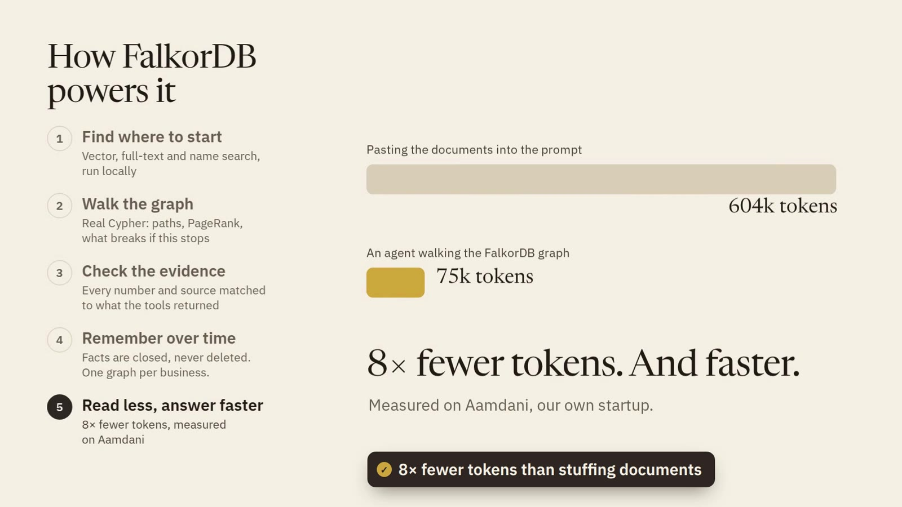
The limits, said plainly:
- The team reads more than one agent: it plans, reviews and checks. It buys the checked answer, the path and the cards.
- On our small synthetic company, pasting the documents was cheaper. The graph wins as the business grows.
- Five questions on two businesses is a measurement, not a benchmark. Every turn now stores its own token count.
War stories: what FalkorDB taught us
A new engine rewards guard rails. Most of ours exist because something broke.
We built on FalkorDB 6.0.2, the new Rust engine, released on 29 September. It was fast and expressive. It also taught us a few things.
Three queries that took the server down
On 15 October our shared database crashed several times. We traced the crashes to three query shapes that panic the module:
- a full sort over 21 or more tied rows that hold maps with nulls (Rust's sort only checks its ordering rule from 21 rows up, so a query can pass for months);
- a NaN ("not a number", such as 0 divided by 0) in a sort key;
- an aggregate (a count or a sum) next to a column that can be null.
The last one was already reported upstream (issue #3150), with a fix open in PR #3229 when we last checked, on 16 October.
A panic takes every graph on the server down with it, and unsaved writes with it. Nothing can catch it afterwards. So we stop it before it is sent: the client refuses those shapes, and a test reads every Cypher string in our code and fails on them. The rule we live by: the last key of every ORDER BY is unique. We fixed 25 sorts and rewrote 13 queries to get there.
Counts that come out short
On 6.0.2, parallel edges between the same two nodes collapse under count, collect or sum when the query doesn't refer to the edge. We keep parallel edges on purpose: a fact that ended and came back is two edges. A lint rule (an automatic check on our code) now makes every aggregate bind and use its edge:
// two R edges from a to b, one closed and one open: this counts 1
MATCH (a:Entity {id:'task:a'})-[:R]->(b) RETURN count(b) AS c
// the edge is bound and used: this counts 2
MATCH (a:Entity {id:'task:a'})-[e:R]->(b) WHERE ID(e) >= 0 RETURN count(b) AS ctests/graph/parallel-edges.test.ts holds the lint to the server: it flags exactly the shapes the server undercounts. The lint has already caught real bugs, the latest in the hygiene report on 18 October.
Labels pick the index
FalkorDB picks an index per label in the pattern. Our id index is on Entity, so (d:Document {id:$x}) scans every Document, while (d:Entity:Document {id:$x}) is an index lookup. A second lint rule requires Entity on every id lookup, and a test checks the real plans with GRAPH.EXPLAIN.
Limits that don't say so
A result over 10,000 rows drops the rest without a word, so every large read pages or packs its rows. The timeout is checked between records, not inside one expression: we measured a big reduce() running 4.5 seconds on a 2-second timeout. So the agents' Cypher tool refuses reduce() and nested list loops.
Persistence needs care
A node created and deleted in the same query wrote nothing to the append-only file (the log the server replays on restart), so a restarted server could not load it. We now write it in two statements, and a source scan keeps it so.
On 15 October the append-only file was also corrupt after a crash, and the server restart-looped on FalkorDB's own telemetry stream. The snapshot was intact, and we recovered from it. The live server now takes a checked backup to S3 every night, and a sweep clears those telemetry streams every 10 minutes.
About 3,400 tests run against a real FalkorDB in throwaway graphs, never the live one.
What isn't there yet
Two real businesses, sample numbers labelled, and no ad accounts yet.
Two businesses run on real data so far. No Meta or Google Ads accounts are connected, so ad numbers are samples, and answers say so. The team runs on one Claude subscription today, not a metered API.
Next: roll-ups and archiving to keep each brain small, our own Google and Meta apps for connections, and a model runtime metered per business.
Try it
- Live: https://13-232-139-42.sslip.io. Sign up for 100 free credits, or open "See the demo".
- Code: https://github.com/Ankit-Vohra/allevia-company-brain
- Every query and algorithm, with its file and line:
docs/falkordb-queries.mdin the repo.